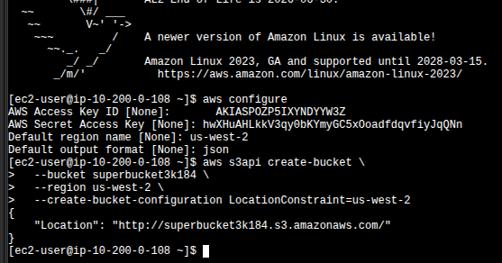
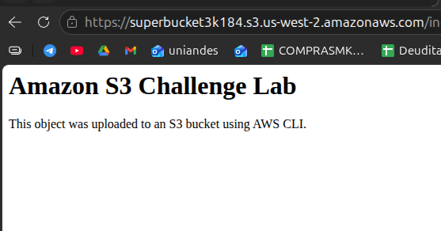

CLI-Only Workflow
Every action — bucket creation, object upload, ACL attempt, public access block removal,
bucket policy application — was executed with aws s3 and aws s3api
from the EC2 Instance Connect terminal.
A self-directed lab: no prescribed steps, just a goal. Create an S3 bucket from the AWS CLI, upload an HTML object, and make that single object publicly readable through the browser. The lab forces the operator to navigate Block Public Access defaults and resolve them with a least-privilege bucket policy.
The lab runs entirely on the CLI Host EC2 instance. The official guide gives a list of goals (create bucket, upload object, make object public, list bucket) but no commands — this report documents the exact CLI path used to satisfy each goal, including the failed first attempt with a public ACL.
Every action — bucket creation, object upload, ACL attempt, public access block removal,
bucket policy application — was executed with aws s3 and aws s3api
from the EC2 Instance Connect terminal.
First with put-object-acl --acl public-read (blocked by Block Public Access),
then with a bucket policy scoped to a single object ARN, which is the path
AWS officially supports today.
Bucket name used: superbucket3k184 · Region: us-west-2.
Connected to the CLI Host EC2 instance via EC2 Instance Connect and
ran aws configure using the temporary lab credentials from the Vocareum
credentials panel. Region us-west-2, output format json.
aws configure # AWS Access Key ID [None]: AKIA…YDYYW3Z # AWS Secret Access Key [None]: hwXHu…jQqNn # Default region name [None]: us-west-2 # Default output format [None]: json
Used aws s3api create-bucket with an explicit LocationConstraint
because the bucket lives outside us-east-1. The API returns the bucket URL
in the Location field, which is the confirmation that creation succeeded.
aws s3api create-bucket \ --bucket superbucket3k184 \ --region us-west-2 \ --create-bucket-configuration LocationConstraint=us-west-2
{
"Location": "http://superbucket3k184.s3.amazonaws.com/"
}

ec2-user@ip-10-200-0-108): aws configure
followed by aws s3api create-bucket returning
{"Location": "http://superbucket3k184.s3.amazonaws.com/"}.
us-east-1 is the legacy default region and the create-bucket API treats it
as implicit — passing LocationConstraint=us-east-1 actually fails.
Every other region requires it explicitly, including us-west-2 here.
index.htmlWrote the HTML file inline with a heredoc, verified its content locally, then uploaded
it to the bucket with aws s3 cp and listed the bucket to confirm the object
was stored.
cat > index.html << 'EOF' <html> <body> <h1>Amazon S3 Challenge Lab</h1> <p>This object was uploaded to an S3 bucket using AWS CLI.</p> </body> </html> EOF
aws s3 cp index.html s3://superbucket3k184/index.html # upload: ./index.html to s3://superbucket3k184/index.html aws s3 ls s3://superbucket3k184 # index.html
At this point the object exists in S3 but is not publicly readable.
Opening the object URL in a browser returns AccessDenied.
The intuitive first try is a public-read ACL on the object. It fails — and the failure is the most educational moment of the lab. S3 Block Public Access ships on by default since April 2023 for new buckets, and it intercepts public ACLs at the API level.
aws s3api put-object-acl \ --bucket superbucket3k184 \ --key index.html \ --acl public-read
An error occurred (AccessDenied) when calling the PutObjectAcl operation:
User: arn:aws:iam::170644204079:user/awsstudent is not authorized to perform:
s3:PutObjectAcl on resource: "arn:aws:s3:::superbucket3k184/index.html"
because public ACLs are prevented by the BlockPublicAcls setting in
S3 Block Public Access.
BlockPublicAcls. This is one of the four flags
of Block Public Access:
BlockPublicAcls, IgnorePublicAcls,
BlockPublicPolicy, RestrictPublicBuckets. The first two govern
ACL-based public access; AWS now considers ACLs a legacy mechanism. The lesson the lab
is teaching: do not rely on object ACLs for public access in 2024+.
Before any bucket policy granting public read can be accepted, the
BlockPublicPolicy flag has to come off. The lab uses
delete-public-access-block, which clears the whole BPA config on the bucket.
aws s3api delete-public-access-block \ --bucket superbucket3k184
put-bucket-policy is attempted before dropping BPA, the policy
is rejected with a similar AccessDenied because BlockPublicPolicy intercepts
the API call. BPA → policy is the correct order.
Wrote a JSON policy that grants s3:GetObject to anonymous principals,
scoped to the single object index.html, not the entire
bucket. This is the part of the lab that's a conscious security decision: the goal is
"make the object public", not "make the bucket public".
cat > object-policy.json << 'EOF' { "Version": "2012-10-17", "Statement": [ { "Sid": "PublicReadOnlyIndexObject", "Effect": "Allow", "Principal": "*", "Action": "s3:GetObject", "Resource": "arn:aws:s3:::superbucket3k184/index.html" } ] } EOF
aws s3api put-bucket-policy \ --bucket superbucket3k184 \ --policy file://object-policy.json
Opened the object URL in a regular browser tab — no AWS credentials, no signed URL. The HTML loaded and rendered the heading and paragraph that were defined in the heredoc, which is the lab's exit criterion.
https://superbucket3k184.s3.us-west-2.amazonaws.com/index.html

https://superbucket3k184.s3.us-west-2.amazonaws.com/index.html
rendering the H1 "Amazon S3 Challenge Lab" and the paragraph,
served anonymously thanks to the object-scoped bucket policy.
The policy is short but every field is deliberate. Worth annotating because this is the single artifact that grants public access.
| Field | Value | Why it's that value |
|---|---|---|
Version |
2012-10-17 |
Latest IAM policy language version. Required — older versions don't support the newer condition operators. |
Sid |
PublicReadOnlyIndexObject |
Optional statement identifier. Useful for auditing and for future
aws s3api get-bucket-policy reads. |
Effect |
Allow |
Grants instead of denies. |
Principal |
"*" |
Anonymous / public. Anyone on the internet. This is the part that, combined with
BlockPublicPolicy being off, actually makes the object public. |
Action |
s3:GetObject |
Read-only. No PutObject, no DeleteObject, no listing.
Public can fetch the file, nothing else. |
Resource |
arn:aws:s3:::superbucket3k184/index.html |
Least-privilege choice. Not …/*. If a second object
gets uploaded later, it stays private by default. The public surface area is exactly
one file. |
Resource: "arn:aws:s3:::superbucket3k184/*" would be more convenient (any file
dropped in the bucket would be public) but it's also strictly worse from a security
standpoint. The lab's challenge brief said "make the object public" — taking that
literally is the right call.
Quick reference of the AWS CLI calls used in this lab.
aws s3api create-bucketCreates an S3 bucket. Outside us-east-1, you must pass
--create-bucket-configuration LocationConstraint=<region>.
aws s3 cp · aws s3 lsHigh-level S3 commands. cp uploads/downloads objects, ls
lists bucket contents. Wrappers over s3api with friendlier UX.
aws s3api put-object-aclSets an ACL on a single object. Will fail on a bucket with default Block Public Access if the ACL is public — by design.
aws s3api delete-public-access-blockRemoves the bucket's Block Public Access configuration entirely. Required before
applying a public bucket policy. Surgical alternative:
put-public-access-block with only the needed flags off.
aws s3api put-bucket-policyAttaches a JSON policy to a bucket. The policy file is referenced as
file://path — without that prefix the CLI tries to parse the path as
inline JSON.
us-east-1.Resource to an exact object ARN keeps the
rest of the bucket private. Wildcards are convenient but rarely justified.The lab is small in surface area — one bucket, one object, six commands — but it accurately maps to the production reality of exposing static assets on S3 in 2024+: ACLs are out, scoped bucket policies are in, and Block Public Access is the guardrail that forces you to opt into public exposure consciously.
The most valuable artifact is the AccessDenied error encountered with the
public ACL attempt. It names BlockPublicAcls directly in the message, which
is exactly the kind of explicit, debuggable error that S3's API surfaces — and it's the
single signal that points you to the correct path (bucket policy) instead of trial and
error.